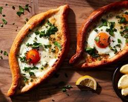
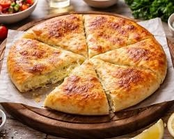

Приветствуем на сайте ресторана грузинской кухни "Пан Хач"
Попробуй грузинский Магнум Опус
Сила-в простоте
Хачапури — это не просто выпечка, а главный манифест и Магнум Опус грузинской кухни.
В мире, где гастрономия часто пытается усложнить всё сложными техниками и десятками ингредиентов, хачапури делает гениальный ход: берёт базовые элементы и доводит их сочетание до абсолютного совершенства.
Our products

Хачпури по-аджарски
Легендарное дрожжевое тесто в форме лодки с сочной начинкой из сулугуни, кусочком сливочного масла и сырым желтком в центре. Край отламывается и макается в горячую начинку.
600 грн;Хачапури по-имеретински
Классический круглый хачапури из тонкого мягкого теста с нежным имеретинским сыром внутри. Простой, сытный и сбалансированный.
480 грн
Хачапури по-мегрельски
Версия для фанатов сыра. Похож на имеретинский, но с двойной дозой сулугуни: сыр запекается и внутри, и толстой золотистой корочкой сверху.
550 грнПеновани
Хрустящий конверт из многослойного быстрого теста с горячей тягучей начиночкой. Главный вариант для формата «взял и пошёл».
300 грн